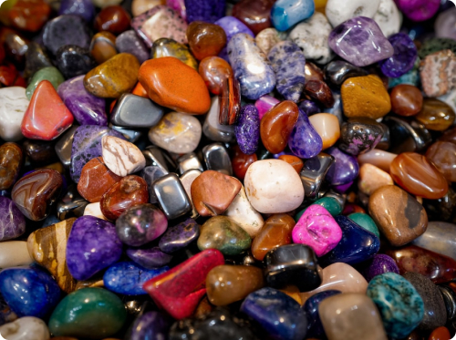

<section class="hero-section-container">
    <div class="hero-inner-container">
        <p class="title-hero">Você consegue reconhecer uma pedra preciosa?</p>
        <div>
            <p class="paragraph-hero-1">O Brasil é o maior exportador de gemas do mundo.
                Por aqui, pedras preciosas são encontradas em barrancos, estradas rurais e podem existir até em seu
                jardim
                sem que você saiba , tamanha é a sua diversidade e presença nas terras Tupiniquins.</p>
            <p class="paragraph-hero-2">Chegou a hora de conhecer as gemas brasileiras.</p>
        </div>
    </div>
    


</section>